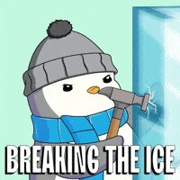

Regressão para pesquisas sociais
Introdução
Doutorando, Centre d’Estudis Demogràfics (CED, Espanha)
Pesquisador Assistente, Cebrap
September 11, 2025
Sejam bem-vinds!
Estrutura do curso
Forma de organização em termos dos dias:
Dia 1 - Segunda, 15 de Setembro - Síncrono
Dia 2 - Terça, 16 de Setembro - Síncrono
Dia 3 - Quarta, 17 de Setembro - Assíncrono
Dia 4 - Quinta, 18 de Setembro - Síncrono
Dia 5 - Sexta, 19 de Setembro - Assíncrono (e opcional)
Dia 1, Segunda
Fundamentos para modelagem de dados quantitativos
Definições e noções acerca de dados quantitativos
Conceitos estatísticos importantes
Noção de correlação e causalidade
Modelagem de fenônemos sociais
Intuição
Limites
Fundamentos
Dia 2, Terça
Modelagem de dados contínuos - regressão linear
Conceitos, noções e jargões utilizados em econometria
Fluxo de análise de dados contínuos com o uso de modelagem
Regressão linear simples
Intuição
Formalização
Propriedade e pressupostos
Mão na massa!
Regressão linear multivariada
Intuição
Formalização
Novidades em relação à regressão linear simples
Mão na massa!: interpretação
Dia 3, Quarta
Modelagem de dados contínuos - regressão linear multivariada com variáveis independentes qualitativas
Exercício de interpretação dos modelos de regressão linear multivariada
Leituras
Variáveis independentes qualitativas
- Variável binária (dummy) em modelos de regressão linear
Dia 4, Quinta
Modelagem de variáveis binárias - regressão logística
Modelagem de fenômenos sociais categóricos
Conceitos e definições adaptados à nova configuração da variável de interesse
Regressão logística
Introdução aos modelos lineares generalizados (MLG)
Intuição
Formalização
Propriedade e pressupostos
Mão na massa!
Regressão logística multivariada
Intuição
Formalização
Mão na massa!: interpretação
Dia 5, Sexta
Próximos passos e aplicação na vida real
Apresentação dos próximos passos de estudo e aprofundamentos
Exercício de aplicação empírica
- Exercício a ser explicado na aula anterior
Questões operacionais
Organização do material
Para cada dia de aula, vocês encontrarão a seguinte organização:
Materiais auxiliares (leituras, outros e vídeos)
Prática
Slide
Confiram sempre os materiais de cada dia, eles serão atualizados à medida que o curso acontecer!
Regras do curso
Aulas síncronas com duração de 3 horas, com uma pausa durante;
Aulas não podem ser gravadas, são diretrizes do cebrap.lab;
Há um formulário de confirmação de presença a ser preenchido em cada aula síncrona;
Nos dias de aula assíncrona, fiquem à vontade para fazer contato via e-mail;
Nos dias de aula síncrona também fiquem à vontade para fazer contato :);
Certificados serão enviados em até 2 semanas após a finalização das aulas.
Quebrando o gelo!
Bate bola, jogo rápido!
Quem é você?
Qual sua história com análise de dados quantitativos (e regressão)?
O que te trouxe até esse curso?
Já fez algum outro curso da trilha quanti do
cebrap.lab? Qual?Qual a afinidade com R?

Vamos lá?
Dúvidas?
Comentários?

cebrap.lab - Introdução à análise de regressão para pesquisas sociais